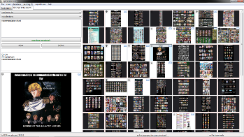
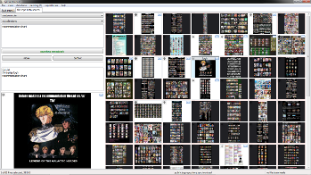

The hydrus network client is an application written for anon and other internet-fluent media nerds who have large image/swf collections. It browses with tags instead of folders, a little like a *booru on your desktop. Tags and files can be anonymously shared through custom servers that any user may run. Everything is free, and the source code is included with the release. It is developed for Windows, but the source code should work for linux or osx.
The software is constantly being improved. I put out a new release every Wednesday at 8pm Eastern.
Currently supported filetypes are:
The client can download and parse tags from a number of websites, including:
It can also dump images to existing 4chan threads.
The program's emphasis is on your freedom. There is no DRM, no phoning home, no censorship.
If you would like to try the program, or would just like to know more, it is highly recommended to check out the help. A copy is included with the release as well. It explains the basics of the network, and how to get connected.
So: